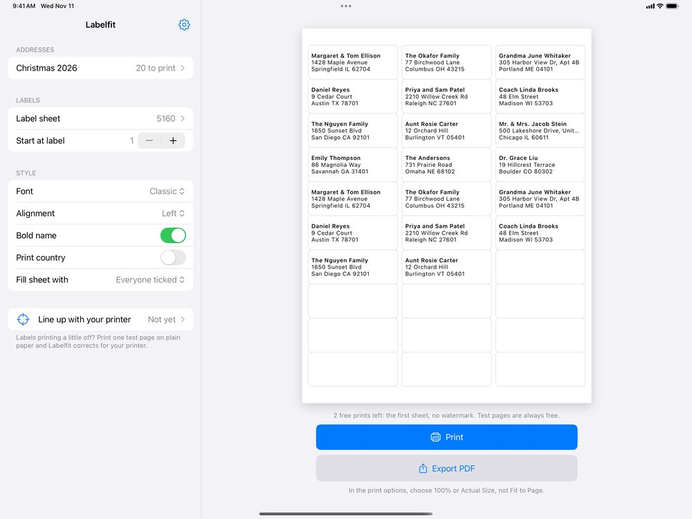

How to print on Avery 5160 labels from an iPad
Choose 5160 / 8160 as the label sheet, check the preview and print at 100% (Actual Size). The 5160 layout is 30 labels on a US Letter sheet, 1 by 2⅝ inches, three across and ten down. 8160 uses the same layout for inkjet printers, 5160 for laser, so pick the one made for your printer.
In Labelfit on an iPad
- Add your addresses: Add from Contacts, Paste addresses for a list copied from a spreadsheet or Notes, or Open a CSV or text file.
- In the sidebar, tap Label sheet and choose Avery 5160 / 8160. The full sheet appears on the right, page by page.
- Adjust if you want: font, centred or left text, bold names, a country line for overseas addresses.
- Tap Print, choose the printer, and load the sheet the way your printer's manual shows for labels. Many printers handle labels better from a rear or manual feed.

If the labels come out a little off
Most printers place the page a fraction of a millimetre to a couple of millimetres away from where the file says, and some stretch it slightly along the paper path. Labelfit prints a test page on plain paper with small scales on two labels; you read four numbers through a window and Labelfit corrects for that printer to within about a millimetre. The details are in why labels print off-center.
Other ways
On a Mac, Contacts can print to the 5160 layout directly (File > Print, Mailing Labels). The label maker's free online designer also runs in Safari on an iPad, though its mobile version leaves out some features. A word processor's label template works too, once you have the addresses in a table.
Labelfit on the App Store. It works with Avery 5160 and 8160 sheets as well as other common sizes.
Avery and Zweckform are trademarks of their owners; Labelfit is not affiliated with them.